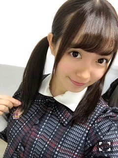
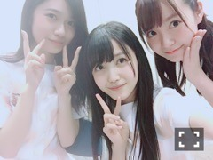

| 2017/09 22 Fri | 中元日芽香 ひめたん-0o0-その724 |

とある撮影で
ツインテールをしてきたので
おすそわけです。どうぞ。
この長さでツインテールだと
余計に幼いですね
あ、髪切ったの
よくわからんというご意見
結構頂きました。デスヨネ。
日曜日
アルバム特典イベント
らじらー！サンデー
月曜日
握手会振替
ありがとうございましたo(^0^)o

愛おしい、、
蘭世に後光が差している、、！
楽屋でこの二人が話し込んでて
遠目に見て萌えてました、
あ、引かないで下さい、、
乃木坂クイズ大会の優勝者が
ひめたん推しだったという(^0ゝ^)
素晴らしい(^0ゝ^)鼻高
最近ポニーテールにハマってます～
この握手会中に
カープ！！優勝しました！！
おめでとうございます！！
一昨年、らじらーの企画で
カープ女子になろうとしてましたが
今年は結構カープ女子だったぞ、、、！
今更。でも結構本気。
何回か試合観戦も行ったぞ｀・ω・′
というのも、最近、
うちの母が試合観戦にハマったらしく、
母は遠征とかしてました。楽しそうでした。
今頃広島盛り上がってるだろうな～
いらっしゃいまし
しゃーーー！！！！
モニちゃん握手会。
可愛いですね。
こんなんあったらみんな並ぶよね。
卒業までにやり遂げるべき
大きな仕事が
幾つか残っているのです、
責任を感じます。
同時にやり甲斐も凄く感じます。
何だろう、気持ちが忙しいです。
ザワザワしてます、
色んなこと考えます。
いついつまでにやらなきゃとか
考えると焦ります、
でも不思議と生き生きしてます
中元は忙しい時こそ楽しくなっちゃう
変な女です！
走り切って
フッと力が抜けた時
どうなるんだろうなぁ
ちゃんと笑顔で
やり切った！！って思えたらいいなあ
良い顔してたらいいなあ、なんて。
(＊´・ω・＊)